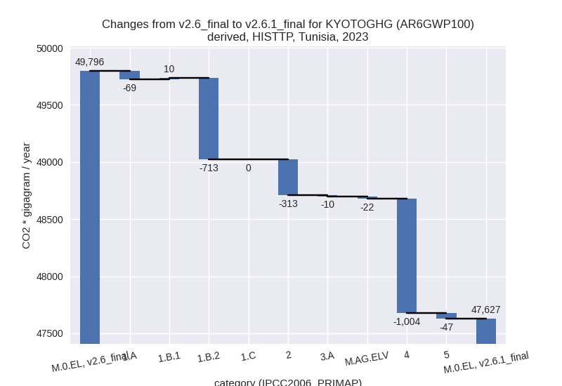
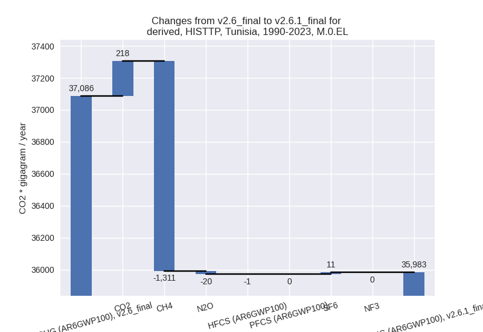

Changes in PRIMAP-hist v2.6.1_final compared to v2.6_final for Tunisia
2025-03-19
Johannes Gütschow
Change analysis for Tunisia for PRIMAP-hist v2.6.1_final compared to v2.6_final
Overview over emissions by sector and gas
The following figures show the aggregate national total emissions excluding LULUCF AR6GWP100 for the country reported priority scenario. The dotted linesshow the v2.6_final data.
The following figures show the aggregate national total emissions excluding LULUCF AR6GWP100 for the third party priority scenario. The dotted linesshow the v2.6_final data.
Overview over changes
In the country reported priority scenario we have the following changes for aggregate Kyoto GHG and national total emissions excluding LULUCF (M.0.EL):
- Emissions in 2023 have changed by -7.8%% (-3950.49 Gg CO2 / year)
- Emissions in 1990-2023 have changed by 4.3%% (1610.46 Gg CO2 / year)
In the third party priority scenario we have the following changes for aggregate Kyoto GHG and national total emissions excluding LULUCF (M.0.EL):
- Emissions in 2023 have changed by -4.4%% (-2169.24 Gg CO2 / year)
- Emissions in 1990-2023 have changed by -3.0%% (-1103.74 Gg CO2 / year)
Most important changes per scenario and time frame
In the country reported priority scenario the following sector-gas combinations have the highest absolute impact on national total KyotoGHG (AR6GWP100) emissions in 2023 (top 5):
- 1: 1.A, CO2 with -3471.82 Gg CO2 / year (-11.1%)
- 2: M.AG.ELV, N2O with -849.57 Gg CO2 / year (-36.2%)
- 3: 1.B.2, CH4 with 744.99 Gg CO2 / year (35.0%)
- 4: 2, HFCS (AR6GWP100) with -708.42 Gg CO2 / year (-39.2%)
- 5: 2, CO2 with 678.95 Gg CO2 / year (15.7%)
In the country reported priority scenario the following sector-gas combinations have the highest absolute impact on national total KyotoGHG (AR6GWP100) emissions in 1990-2023 (top 5):
- 1: 1.B.2, CH4 with 1109.30 Gg CO2 / year (40.7%)
- 2: 2, CO2 with 1086.56 Gg CO2 / year (31.3%)
- 3: M.AG.ELV, N2O with -581.96 Gg CO2 / year (-29.2%)
- 4: 1.B.2, CO2 with 500.63 Gg CO2 / year (76.1%)
- 5: 3.A, CH4 with 498.95 Gg CO2 / year (20.5%)
In the third party priority scenario the following sector-gas combinations have the highest absolute impact on national total KyotoGHG (AR6GWP100) emissions in 2023 (top 5):
- 1: 4, CH4 with -1035.35 Gg CO2 / year (-24.9%)
- 2: 1.B.2, CH4 with -540.09 Gg CO2 / year (-25.4%)
- 3: 2, CO2 with -341.75 Gg CO2 / year (-7.9%)
- 4: 1.B.2, CO2 with -172.00 Gg CO2 / year (-29.2%)
- 5: M.AG.ELV, CO2 with 130.96 Gg CO2 / year (383.0%)
In the third party priority scenario the following sector-gas combinations have the highest absolute impact on national total KyotoGHG (AR6GWP100) emissions in 1990-2023 (top 5):
- 1: 4, CH4 with -858.06 Gg CO2 / year (-26.1%)
- 2: 1.B.2, CH4 with -445.21 Gg CO2 / year (-16.3%)
- 3: 2, CO2 with 187.57 Gg CO2 / year (5.4%)
- 4: 4, CO2 with 15.70 Gg CO2 / year (inf%)
- 5: 5, N2O with -14.23 Gg CO2 / year (-10.7%)
Notes on data changes
Here we list notes explaining important emissions changes for the country.
- CRT data for 1990-2022 has been included. It replaces and extends
NC3 and DI data which only covered some sectors and gases
- CO2 emissions in 1.A are lower because the post 20202 growth rates in CRT data are lower than those in EI data which was used to extrapolate country reported data in PRIMAP-hist v2.6
- N2O emissions in M.AG.ELV are available from country reported data for the first time leading to lower emissions in PRIMAP-hist CR.
- Similarly, country reported data replaced EDGAR for CH4 in 1.B.2 leading to higher emissions.
- Lower HFC emissions are also due to the newly available country reported data.
- Higher CO2 from 2.A is also due to the new country reported data.
- High removals in LULUCF CO2 data come directly from CRT data.
- Changes in the TP time-series come from updated EDGAR and FAO data. FAO has adjusted data for the latest years while EDGAR has updated full time-series with the main change coming from the waste sector.
Changes by sector and gas
For each scenario and time frame the changes are displayed for all individual sectors and all individual gases. In the sector plot we use aggregate Kyoto GHGs in AR6GWP100. In the gas plot we usenational total emissions without LULUCF.
country reported scenario
2023
1990-2023
third party scenario
2023

1990-2023

Detailed changes for the scenarios:
country reported scenario (HISTCR):
Most important changes per time frame
For 2023 the following sector-gas combinations have the highest absolute impact on national total KyotoGHG (AR6GWP100) emissions in 2023 (top 5):
- 1: 1.A, CO2 with -3471.82 Gg CO2 / year (-11.1%)
- 2: M.AG.ELV, N2O with -849.57 Gg CO2 / year (-36.2%)
- 3: 1.B.2, CH4 with 744.99 Gg CO2 / year (35.0%)
- 4: 2, HFCS (AR6GWP100) with -708.42 Gg CO2 / year (-39.2%)
- 5: 2, CO2 with 678.95 Gg CO2 / year (15.7%)
For 1990-2023 the following sector-gas combinations have the highest absolute impact on national total KyotoGHG (AR6GWP100) emissions in 1990-2023 (top 5):
- 1: 1.B.2, CH4 with 1109.30 Gg CO2 / year (40.7%)
- 2: 2, CO2 with 1086.56 Gg CO2 / year (31.3%)
- 3: M.AG.ELV, N2O with -581.96 Gg CO2 / year (-29.2%)
- 4: 1.B.2, CO2 with 500.63 Gg CO2 / year (76.1%)
- 5: 3.A, CH4 with 498.95 Gg CO2 / year (20.5%)
Changes in the main sectors for aggregate KyotoGHG (AR6GWP100) are
- 1: Total sectoral emissions in 2022 are 30923.84 Gg
CO2 / year which is 67.0% of M.0.EL emissions. 2023 Emissions have
changed by -11.2% (-4000.59 Gg CO2 /
year). 1990-2023 Emissions have changed by 4.1% (1047.98 Gg CO2 / year). For 2023 the
changes per gas
are:
For 1990-2023 the changes per gas are:
The changes come from the following subsectors:- 1.A: Total sectoral emissions in 2022 are 27397.28
Gg CO2 / year which is 88.6% of category 1 emissions. 2023 Emissions
have changed by -12.4% (-4006.95 Gg
CO2 / year). 1990-2023 Emissions have changed by -1.3% (-283.63 Gg CO2 / year). For 2023
the changes per gas
are:
There is no subsector information available in PRIMAP-hist. - 1.B.1: Total sectoral emissions in 2022 are 283.28
Gg CO2 / year which is 0.9% of category 1 emissions. 2023 Emissions have
changed by -54.6% (-340.75 Gg CO2 /
year). 1990-2023 Emissions have changed by -57.1% (-279.34 Gg CO2 / year). For 2023
the changes per gas
are:
For 1990-2023 the changes per gas are:
There is no subsector information available in PRIMAP-hist. - 1.B.2: Total sectoral emissions in 2022 are 3243.28
Gg CO2 / year which is 10.5% of category 1 emissions. 2023 Emissions
have changed by 12.8% (347.11 Gg CO2
/ year). 1990-2023 Emissions have changed by 47.6% (1610.95 Gg CO2 / year). For 2023
the changes per gas
are:
For 1990-2023 the changes per gas are:
There is no subsector information available in PRIMAP-hist.
- 1.A: Total sectoral emissions in 2022 are 27397.28
Gg CO2 / year which is 88.6% of category 1 emissions. 2023 Emissions
have changed by -12.4% (-4006.95 Gg
CO2 / year). 1990-2023 Emissions have changed by -1.3% (-283.63 Gg CO2 / year). For 2023
the changes per gas
are:
- 2: Total sectoral emissions in 2022 are 6312.63 Gg
CO2 / year which is 13.7% of M.0.EL emissions. 2023 Emissions have
changed by -0.7% (-43.39 Gg CO2 /
year). 1990-2023 Emissions have changed by 18.2% (792.39 Gg CO2 / year). For
1990-2023 the changes per gas
are:
- M.AG: Total sectoral emissions in 2022 are 4689.83
Gg CO2 / year which is 10.2% of M.0.EL emissions. 2023 Emissions have
changed by -1.6% (-73.82 Gg CO2 /
year). 1990-2023 Emissions have changed by -2.0% (-94.11 Gg CO2 / year). For
1990-2023 the changes per gas
are:

The changes come from the following subsectors:- 3.A: Total sectoral emissions in 2022 are 3142.83
Gg CO2 / year which is 67.0% of category M.AG emissions. 2023 Emissions
have changed by 36.2% (834.79 Gg CO2
/ year). 1990-2023 Emissions have changed by 27.5% (677.19 Gg CO2 / year). For 2023 the
changes per gas
are:
For 1990-2023 the changes per gas are:
There is no subsector information available in PRIMAP-hist. - M.AG.ELV: Total sectoral emissions in 2022 are
1547.01 Gg CO2 / year which is 33.0% of category M.AG emissions. 2023
Emissions have changed by -37.7%
(-908.61 Gg CO2 / year). 1990-2023 Emissions have changed by -35.1% (-771.31 Gg CO2 / year). For 2023
the changes per gas
are:
For 1990-2023 the changes per gas are:
There is no subsector information available in PRIMAP-hist.
- 3.A: Total sectoral emissions in 2022 are 3142.83
Gg CO2 / year which is 67.0% of category M.AG emissions. 2023 Emissions
have changed by 36.2% (834.79 Gg CO2
/ year). 1990-2023 Emissions have changed by 27.5% (677.19 Gg CO2 / year). For 2023 the
changes per gas
are:
- 4: Total sectoral emissions in 2022 are 4078.12 Gg
CO2 / year which is 8.8% of M.0.EL emissions. 2023 Emissions have
changed by 5.5% (214.73 Gg CO2 /
year). 1990-2023 Emissions have changed by -4.5% (-121.56 Gg CO2 / year). For 2023
the changes per gas
are:
For 1990-2023 the changes per gas are: - 5: Total sectoral emissions in 2022 are 156.55 Gg
CO2 / year which is 0.3% of M.0.EL emissions. 2023 Emissions have
changed by -23.1% (-47.43 Gg CO2 /
year). 1990-2023 Emissions have changed by -10.7% (-14.23 Gg CO2 / year). For 2023
the changes per gas
are:
For 1990-2023 the changes per gas are:
third party scenario (HISTTP):
Most important changes per time frame
For 2023 the following sector-gas combinations have the highest absolute impact on national total KyotoGHG (AR6GWP100) emissions in 2023 (top 5):
- 1: 4, CH4 with -1035.35 Gg CO2 / year (-24.9%)
- 2: 1.B.2, CH4 with -540.09 Gg CO2 / year (-25.4%)
- 3: 2, CO2 with -341.75 Gg CO2 / year (-7.9%)
- 4: 1.B.2, CO2 with -172.00 Gg CO2 / year (-29.2%)
- 5: M.AG.ELV, CO2 with 130.96 Gg CO2 / year (383.0%)
For 1990-2023 the following sector-gas combinations have the highest absolute impact on national total KyotoGHG (AR6GWP100) emissions in 1990-2023 (top 5):
- 1: 4, CH4 with -858.06 Gg CO2 / year (-26.1%)
- 2: 1.B.2, CH4 with -445.21 Gg CO2 / year (-16.3%)
- 3: 2, CO2 with 187.57 Gg CO2 / year (5.4%)
- 4: 4, CO2 with 15.70 Gg CO2 / year (inf%)
- 5: 5, N2O with -14.23 Gg CO2 / year (-10.7%)
Changes in the main sectors for aggregate KyotoGHG (AR6GWP100) are
- 1: Total sectoral emissions in 2022 are 32560.08 Gg
CO2 / year which is 69.6% of M.0.EL emissions. 2023 Emissions have
changed by -2.3% (-772.51 Gg CO2 /
year). 1990-2023 Emissions have changed by -1.8% (-442.26 Gg CO2 / year). For 2023
the changes per gas
are:
The changes come from the following subsectors:- 1.A: Total sectoral emissions in 2022 are 29666.64 Gg CO2 / year which is 91.1% of category 1 emissions. 2023 Emissions have changed by -0.2% (-69.40 Gg CO2 / year). 1990-2023 Emissions have changed by -0.0% (-5.55 Gg CO2 / year).
- 1.B.1: Total sectoral emissions in 2022 are 633.59 Gg CO2 / year which is 1.9% of category 1 emissions. 2023 Emissions have changed by 1.5% (9.57 Gg CO2 / year). 1990-2023 Emissions have changed by 0.2% (1.20 Gg CO2 / year).
- 1.B.2: Total sectoral emissions in 2022 are 2259.85
Gg CO2 / year which is 6.9% of category 1 emissions. 2023 Emissions have
changed by -26.2% (-712.68 Gg CO2 /
year). 1990-2023 Emissions have changed by -12.9% (-437.90 Gg CO2 / year). For 2023
the changes per gas
are:
For 1990-2023 the changes per gas are:
There is no subsector information available in PRIMAP-hist.
- 2: Total sectoral emissions in 2022 are 5990.02 Gg
CO2 / year which is 12.8% of M.0.EL emissions. 2023 Emissions have
changed by -4.9% (-313.46 Gg CO2 /
year). 1990-2023 Emissions have changed by 4.5% (198.31 Gg CO2 / year). For 2023 the
changes per gas
are:
For 1990-2023 the changes per gas are: - M.AG: Total sectoral emissions in 2022 are 4751.07 Gg CO2 / year which is 10.2% of M.0.EL emissions. 2023 Emissions have changed by -0.7% (-31.97 Gg CO2 / year). 1990-2023 Emissions have changed by -0.1% (-3.58 Gg CO2 / year).
- 4: Total sectoral emissions in 2022 are 3317.75 Gg
CO2 / year which is 7.1% of M.0.EL emissions. 2023 Emissions have
changed by -23.0% (-1003.87 Gg CO2 /
year). 1990-2023 Emissions have changed by -24.4% (-841.98 Gg CO2 / year). For 2023
the changes per gas
are:

For 1990-2023 the changes per gas are: - 5: Total sectoral emissions in 2022 are 156.55 Gg
CO2 / year which is 0.3% of M.0.EL emissions. 2023 Emissions have
changed by -23.1% (-47.43 Gg CO2 /
year). 1990-2023 Emissions have changed by -10.7% (-14.23 Gg CO2 / year). For 2023
the changes per gas
are:
For 1990-2023 the changes per gas are: